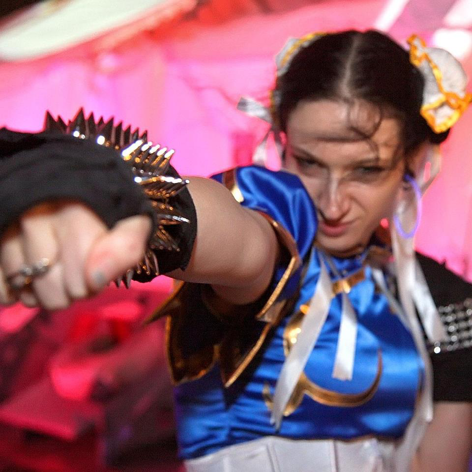
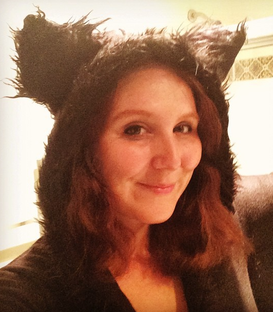
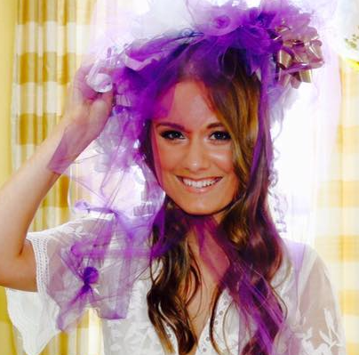
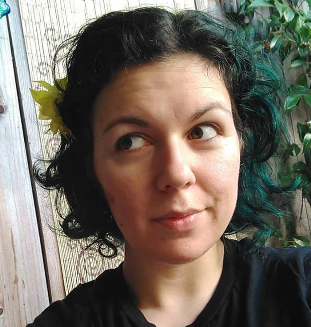

|

|
GLORIOUS LEADER AND MAID OF HONOR MARISA DIEHL, who has had dibs on being Sara's maid of honor since seventh grade, and who is killing it. An amazing artist, erstwhile spooky doctor, and mom of multiple kitties, each bigger and softer than the last. Being friends with her is the closest thing Sara has ever done to being cool. |
|  |
GORGEOUS BRIDESMAID DIANA LOVE, Sara's college roommate, who she loved even before it was officially part of her name. Currently writing the Great American Novel, or, rather, the Great American Short Story Collection, and officially The Person Whose Wedding Sara Would Most Love to Steal Even Though It Wouldn't Make Any Sense For Where She Lives Because It Was Just That Good. |
|  |
RESPLENDENT BRIDESMAID ALEXANDRA PEVAR, the only person awesome enough to marry Sara's brother. When she isn't literally teaching the lame to walk and the blind to see like it's her job (because it is her job), she is raising the world's cutest dog named after the world's best food. |
|  |
MIRACULOUS BRIDESMAID CONSTANTINA KARATHANASIS, Sara's very first friend, whom you can blame for roughly 60% of her bizarre personality and 100% of her knowledge of Xena: Warrior Princess. Adventurer, real-life video game PC, and all around badass. |